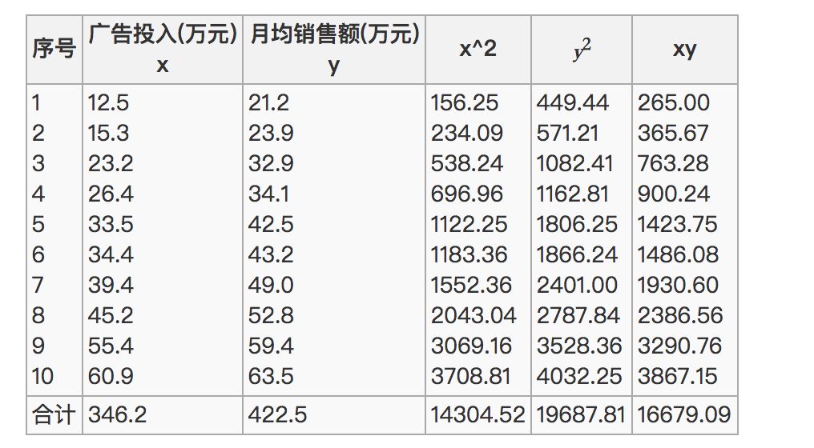
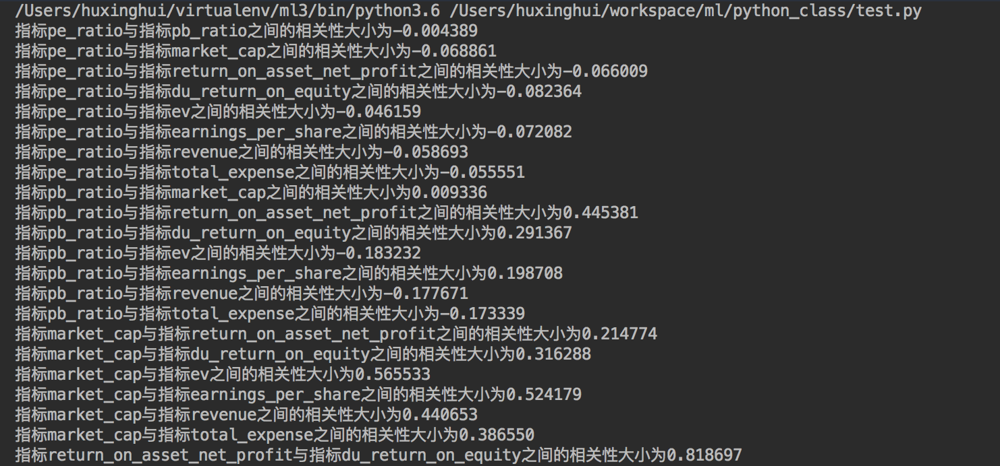
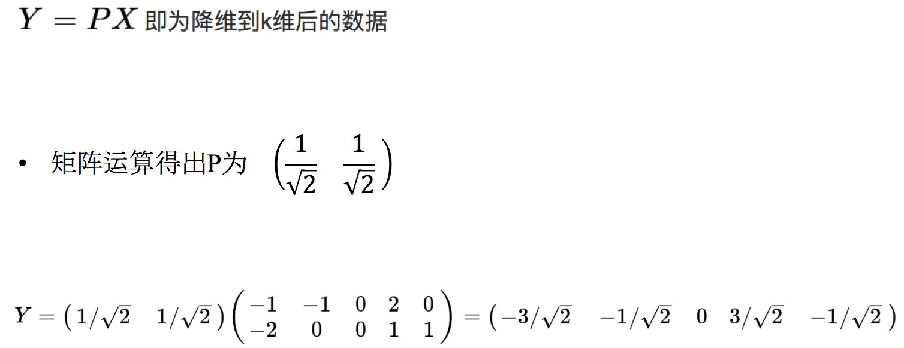

降维是指在某些限定条件下，降低随机变量(特征)个数，得到一组“不相关”主变量的过程

正是因为在进行训练的时候，我们都是使用特征进行学习。如果特征本身存在问题或者特征之间相关性较强，对于算法学习预测会影响较大。
数据中包含冗余或无关变量（或称特征、属性、指标等），旨在从原有特征中找出主要特征。

对于Embedded方式，只能在讲解算法的时候在进行介绍，更好的去理解
sklearn.feature_selection
删除低方差的一些特征，前面讲过方差的意义。再结合方差的大小来考虑这个方式的角度。
API
sklearn.feature_selection.VarianceThreshold(threshold = 0.0)Variance.fit_transform(X)我们对某些股票的指标特征之间进行一个筛选，除去'index,'date','return'列不考虑（这些类型不匹配，也不是所需要指标）
一共这些特征
!cat /share/datasets/factor_returns.csv
1、初始化VarianceThreshold,指定阀值方差
2、调用fit_transform
def variance_demo():
"""
删除低方差特征——特征选择
:return: None
"""
data = pd.read_csv("/share/datasets/factor_returns.csv")
print(data)
# 1、实例化一个转换器类
transfer = VarianceThreshold(threshold=1)
# 2、调用fit_transform
data = transfer.fit_transform(data.iloc[:, 1:10])
print("删除低方差特征的结果：\n", data)
print("形状：\n", data.shape)
return None
#调用
variance_demo()


那么之间的相关系数怎么计算

最终计算：

= 0.9942
所以我们最终得出结论是广告投入费与月平均销售额之间有高度的正相关关系。
特点：相关系数的值介于–1与+1之间，即–1≤ r ≤+1。其性质如下：
这个符号：|r|为r的绝对值， |-5| = 5
API
我们刚才的股票的这些指标进行相关性计算， 假设我们以
factor = ['pe_ratio','pb_ratio','market_cap','return_on_asset_net_profit','du_return_on_equity','ev','earnings_per_share','revenue','total_expense']
这些特征当中的两两进行计算，得出相关性高的一些特征

import pandas as pd
from scipy.stats import pearsonr
def pearsonr_demo(data):
"""
相关系数计算
:return: None
"""
factor = ['pe_ratio', 'pb_ratio', 'market_cap', 'return_on_asset_net_profit', 'du_return_on_equity', 'ev',
'earnings_per_share', 'revenue', 'total_expense']
for i in range(len(factor)):
for j in range(i, len(factor) - 1):
print(
"指标%s与指标%s之间的相关性大小为%f" % (factor[i], factor[j + 1], pearsonr(data[factor[i]], data[factor[j + 1]])[0]))
return None
data = pd.read_csv("/share/datasets/factor_returns.csv")
#验证函数对象
pearsonr_demo()
从中我们得出
我们也可以通过画图来观察结果
%matplotlib inline
import matplotlib.pyplot as plt
plt.figure(figsize=(20, 8), dpi=100)
data = pd.read_csv("/share/datasets/factor_returns.csv")
plt.scatter(data['revenue'], data['total_expense'])
plt.show()
这两对指标之间的相关性较大，可以做之后的处理，比如合成这两个指标。
对于信息一词，在决策树中会进行介绍
那么更好的理解这个过程呢？我们来看一张图

假设对于给定5个点，数据如下
(-1,-2)
(-1, 0)
( 0, 0)
( 2, 1)
( 0, 1)

要求：将这个二维的数据简化成一维？ 并且损失少量的信息

这个过程如何计算的呢？找到一个合适的直线，通过一个矩阵运算得出主成分分析的结果（不需要理解）

API
sklearn.decomposition.PCA(n_components=None)PCA.fit_transform(X) X:numpy array格式的数据[n_samples,n_features]from sklearn.decomposition import PCA
def pca_demo():
"""
对数据进行PCA降维
:return: None
"""
data = [[2,8,4,5], [6,3,0,8], [5,4,9,1]]
# 1、实例化PCA, 小数——保留多少信息
transfer = PCA(n_components=0.9)
# 2、调用fit_transform
data1 = transfer.fit_transform(data)
print("保留90%的信息，降维结果为：\n", data1)
# 1、实例化PCA, 整数——指定降维到的维数
transfer2 = PCA(n_components=3)
# 2、调用fit_transform
data2 = transfer2.fit_transform(data)
print("降维到3维的结果：\n", data2)
return None
pca_demo()

数据如下：
需求


分析
完整代码
import pandas as pd
from sklearn.decomposition import PCA
# 1、获取数据集
# ·商品信息- products.csv：
# Fields：product_id, product_name, aisle_id, department_id
# ·订单与商品信息- order_products__prior.csv：
# Fields：order_id, product_id, add_to_cart_order, reordered
# ·用户的订单信息- orders.csv：
# Fields：order_id, user_id,eval_set, order_number,order_dow, order_hour_of_day, days_since_prior_order
# ·商品所属具体物品类别- aisles.csv：
# Fields：aisle_id, aisle
products = pd.read_csv("./instacart/products.csv")
order_products = pd.read_csv("./instacart/order_products__prior.csv")
orders = pd.read_csv("./instacart/orders.csv")
aisles = pd.read_csv("./instacart/aisles.csv")
# 2、合并表，将user_id和aisle放在一张表上
# 1）合并orders和order_products on=order_id tab1:order_id, product_id, user_id
tab1 = pd.merge(orders, order_products, on=["order_id", "order_id"])
# 2）合并tab1和products on=product_id tab2:aisle_id
tab2 = pd.merge(tab1, products, on=["product_id", "product_id"])
# 3）合并tab2和aisles on=aisle_id tab3:user_id, aisle
tab3 = pd.merge(tab2, aisles, on=["aisle_id", "aisle_id"])
# 3、交叉表处理，把user_id和aisle进行分组
table = pd.crosstab(tab3["user_id"], tab3["aisle"])
# 4、主成分分析的方法进行降维
# 1）实例化一个转换器类PCA
transfer = PCA(n_components=0.95)
# 2）fit_transform
data = transfer.fit_transform(table)
data.shape
特征选择的嵌入式、过滤式以及包裹氏三种方式？
应用VarianceThreshold()实现删除低方差特征
#
相关系数的特点和计算？
应用相关性系数实现特征选择？
应用PCA实现特征的降维？
#